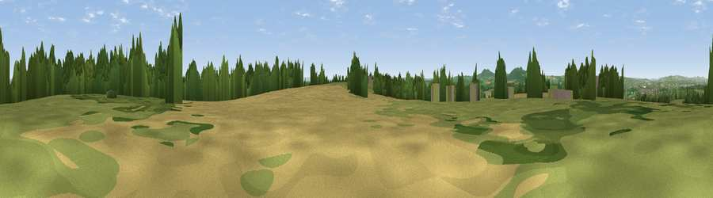

Viewpoint near Hartlebury
#31307 in England · top 65% of its area beats it · near HartleburyWhere it is
The exact computed spot (SO 83125 68225). Click the marker for map links.
The view, rendered

A 360° render of this exact spot computed from the terrain model, tree cover and land cover — summer colours, afternoon light, calibrated against photographs of famous viewpoints. Real trees, hedges and buildings will differ in detail.
The panorama
Grey silhouette: terrain skyline in each direction (720 bearings, Earth curvature and refraction included). Dashed green: skyline with trees (+15 m) and buildings (+8 m) as obstacles. Blue strip: how far the ground is visible on each bearing.
Where the view opens
Wedge length = distance to the farthest visible ground on that bearing (vegetation-aware). Rings at 10, 25 and 50 km.
What fills the view
34% cropland · 31% grassland · 30% woodland · 5% built-up
Angular shares of the visible panorama (visual magnitude), not map area. Landscape diversity 0.54 (0–1 Shannon).
Key numbers
More beautiful places nearby
The staircase of upgrades: each row has a higher view potential than everything closer. Driving times are estimates from straight-line distance, calibrated against real road routing — check an actual route before setting out.
| Place | Direction | Drive | Score |
|---|---|---|---|
| Bishops Wood Hill | S · 0 km | ~2 min | 42.5 |
| Viewpoint near Hartlebury | W · 1 km | ~2 min | 48.5 |
| Viewpoint near Dunley | WNW · 5 km | ~11 min | 55.3 |
| Stagborough Hill | NW · 6 km | ~12 min | 63.8 |
| Viewpoint near Abberley | W · 7 km | ~14 min | 77.5 |
| Viewpoint near Abberley | W · 8 km | ~16 min | 78.1 |
| Abberley Hill | W · 8 km | ~16 min | 80.4 |
| Viewpoint near Great Witley | WSW · 9 km | ~18 min | 83.4 |
52.31187, -2.24895 · source: screening · position refined by local search. Computed location — check access rights before visiting.